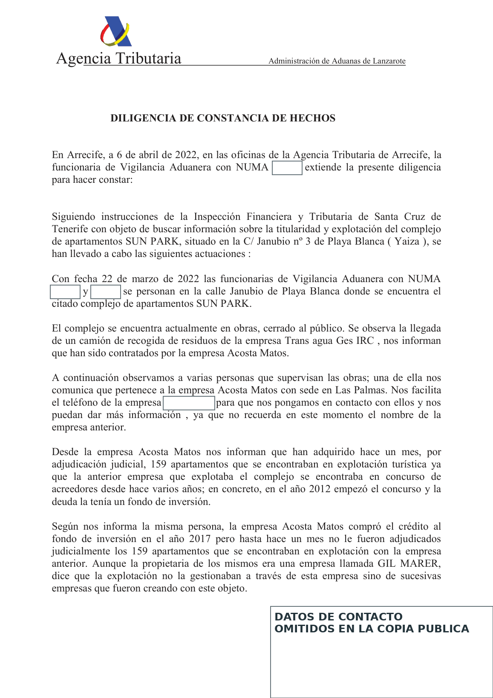

1 · Official March 2022 observation
The officers recorded that the complex was undergoing works and closed to the public on 22 March 2022. Pages 3 and 4 retain four photographs from that visit.
Direct documentary fact, limited to that date.
ADMINISTRATIVE SOURCE · 22 MAR / 6 APR 2022 · FIVE PAGES
Customs Surveillance documented a Sun Park visit, four photographs and a business-channel account concerning ownership, operation, Booking, complaints, judicial award and tourism registration. Its decisive value lies in separating official observation from third-party statements and then testing what AEAT adopted.
Complete source located · neutral public copy

Controlled reading
The officers recorded that the complex was undergoing works and closed to the public on 22 March 2022. Pages 3 and 4 retain four photographs from that visit.
Direct documentary fact, limited to that date.
A person at the site supplied a business telephone number. The diligence then records an account from an unnamed male interlocutor and, separately, statements attributed to Laura Acosta Matos.
The male identity remains open.
Page 1 refers to “a company called GIL MARER”. Gil Marer is a natural person; page 2 itself identifies Luchy Playa Blanca, S.L.U. as owner of the 159 apartments. Every legal person and capacity must therefore be controlled.
Objective internal contradiction.
The diligence recites a 1991–2014 tourism history. That matters, but does not alone establish who invoiced, collected bookings, controlled accounts or received hotel income in 2017–2018.
Important formal evidence, not a complete economic conclusion.
Exact attribution
| Source | Recorded content | What it proves | Evidence still required |
|---|---|---|---|
| Customs Surveillance officers | Visit, works, public closure, people supervising and four photographs. | Direct official observation of the visible condition on 22 March 2022. | Does not reconstruct 2017–2018 or itself identify operator, account or income. |
| Unnamed person at the site | Claimed association with the Acosta Matos channel and business contact route. | Recorded statement. | Name, exact company, role, authority and knowledge. |
| Unnamed male corporate interlocutor | 2017 credit purchase; award of 159 units; 49 other purchases; Booking advertising; alleged complaints, threats and blocked access. | That AEAT recorded that account. | Identity; deeds and unit schedule; Booking/PMS; police files; witnesses; dates and outcomes. |
| Laura Acosta Matos | 24 November 2021 Cabildo request; Gil/Monterecco/LPB relationship; challenge and alleged lack of consent to the 2014 change; claimed operation to 2018. | Named source and identifiable propositions. | Complete Cabildo request/certificate; capacity; documentary basis; entity-, period- and account-level comparison. |
| Recited, unappended Cabildo certificate | Sun Park S.A. 1991; Monte Lanza, S.L. 1996; Monterecco Sun Park, S.L. 2012; Owners' Community 2014. | That the diligence transcribes that sequence. | Native certificate, file, applications, 2015 challenge, decision and exact legal effect. |
Causation control
Pink / AEAT
Pink Canary Services, S.L.U.—formerly Monterecco Sun Park, S.L.U.—LPB, CEXP, the Owners' Community, Matkator, CAM and third-party owners are distinct persons or structures.
Tourism registration, maintenance, reception, keys, bookings, marketing, ownership, security, works and preservation are not automatically the same function and cannot be moved between years.
Tax attribution requires a bank or merchant account, PMS/OTA, invoice, contract, staff, customer, booking, beneficiary and period. The diligence does not supply that economic bridge.
Document room
The received copy contained 27 later editorial highlights and 27 associated popup objects. The public version removes them so they are not mistaken for AEAT markings, rasterises all five pages and retains all four photographs.
ID: EVID-AEAT-PINK-VA-20220406-001
Received-source SHA-256: b6ffc7cf…117bb16
Public-PDF SHA-256: 1698a080…5dbf2c9
Interconnection